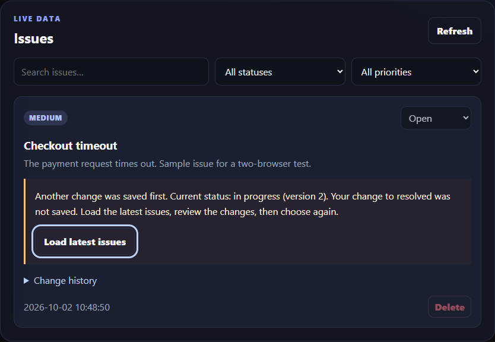

Webbapplikation · Gränssnitt, API & databas
IssuePilot
Ärendehantering från webbgränssnitt till databas.
Ett webbgränssnitt med sökning och filtrering, ett FastAPI-API och SQLite-lagring. Privat läge har inloggning, roller och ändringshistorik. Versionskontroll stoppar gamla flikar från att skriva över nyare ändringar; gränssnittet låter användaren granska konflikten.
Python / FastAPI · SQLite · JavaScript · Pytest